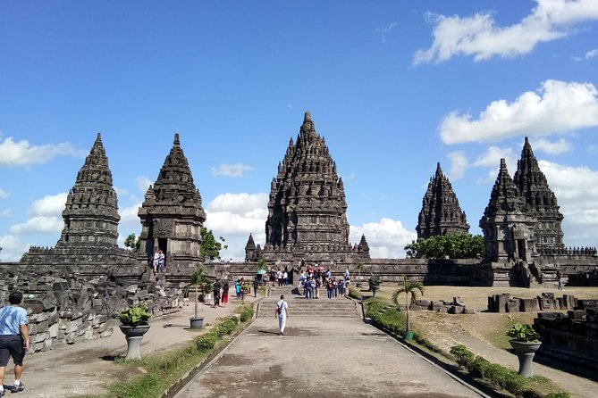

Beranda
Kontak
Tentang
Tour Guide

Profil
Ulasan
Riwayat
Malioboro

Jalan ikonik di Yogyakarta, pusat perbelanjaan dan hiburan malam dengan suasana khas, pedagang kaki lima, dan lampu neon yang menarik.
Candi Prambanan
Keindahan Hindu abad ke-9 di Yogyakarta. Siluet megah dan relief ukiran menciptakan potret budaya Indonesia yang memukau.
Keraton Jogja

Keelokan arsitektur Jawa, kehijauan taman, dan pesona sejarah yang terpancar. Suasana hangat dan detail artistik yang memikat perhatian.
Taman Pintar

Gabungan alam dan inovasi dalam taman teratur dengan instalasi seni modern, menciptakan pengalaman visual yang cerdas dan inspiratif.
Taman Sari
Istana air yang memesona dengan arsitektur istimewa dan keindahan taman yang menakjubkan. Suasana magis dan penuh sejarah.

Goa Pindul
Petualangan seru menyusuri gua bawah tanah dengan ban pelampung. Keindahan stalaktit dan stalagmit memikat mata pengunjung.


2023 WebCrafters